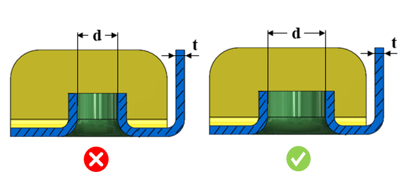

押し出し穴の内径は、ユーザーが指定した値以上である必要があります。
押し出し穴の内径は、標準的なピンやボルトなどを収容できる十分な大きさである必要があります。
一般的な指針として、押し出し穴の最小内径は、構成で設定された値に従う必要があります。
DFMPro は押し出し穴フィーチャーを識別し、押し出し穴の内径の値を算出します。実際の値は、構成で設定された値と照合されて検証されます。
ユーザーは、デフォルトで構成されている値を編集することができます。
ルール UI では、材料の一覧が Map Material から読み込まれ、ユーザーは材料およびその値を構成することができます。
材料およびその値を構成した後、ユーザーは Ctrl+M コマンドを使用して、ルール UI 上で材料グループおよびグレード付きの構成済み材料の一覧をフィルタリングして表示できます。同じキー（Ctrl+M）を使用して、フィルターをリセットできます。

ここでは、
d = 押し出し穴の最小内径
t = 板厚